Artificial Intelligence · Embedded Programming
Sign Language Detection using YOLOv5
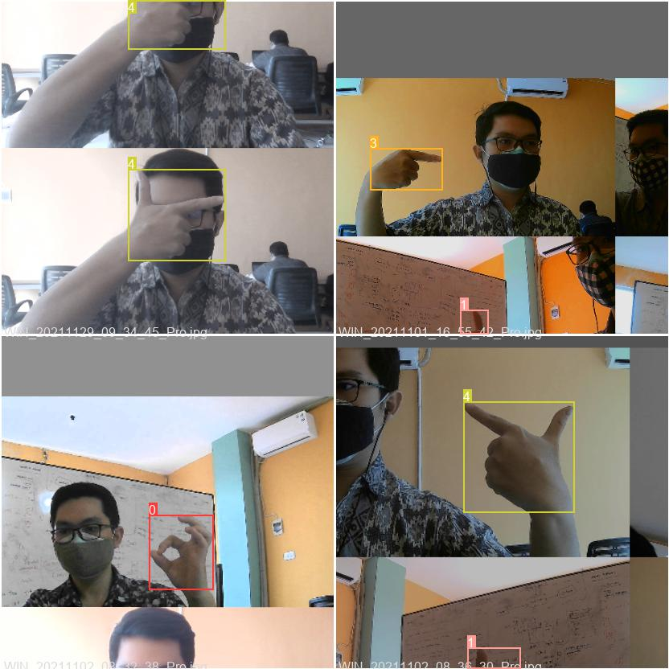
Published in COMMIT (Communication and Information Technology) Journal as "Hand Symbol Classification for Human-Computer Interaction Using the Fifth Version of YOLO Object Detection".
Abstract
Most human-computer interaction relies on physical contact — a mouse, for instance — which breaks down when hands are wet or dirty. This project applies computer vision to sidestep that problem, building and evaluating a YOLOv5m object detection model that classifies five hand gestures: ok, cancel, previous, next, and confirm. Final model performance: 80% accuracy, 95% precision, 84% recall, and an 89% F1 score.
YOLO Algorithm
YOLO (You Only Look Once) is a single-shot detector — trading some accuracy against R-CNN-family models for significantly faster inference. Originally developed by Joseph Redmon on the Darknet framework, later versions improved speed and accuracy; YOLOv5, built on PyTorch by Glenn Jocher, is used here.
YOLO divides an image into an S×S grid; each cell predicts a bounding box (width, height, class, and center point) and a confidence score derived from Intersection over Union (IoU) against ground truth. This project uses the yolov5m variant. Its architecture — backbone, neck, and head:
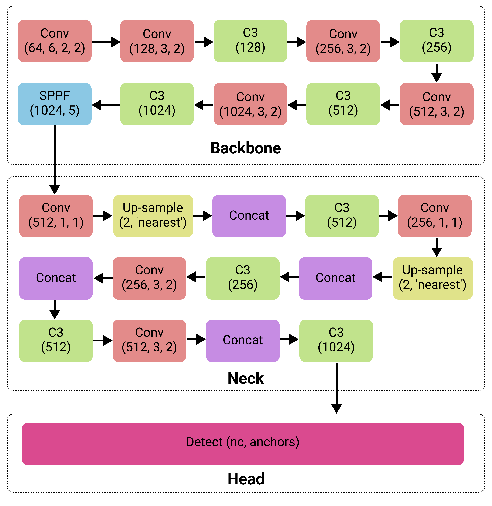
Model Creation
Model creation split into three phases: dataset creation, training, and evaluation. The dataset covers five gesture classes — cancel, previous, next, ok, and confirm — each with roughly 100 training images.
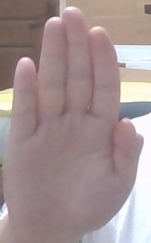
Cancel
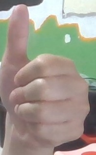
Confirm
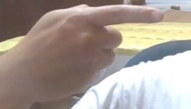
Previous
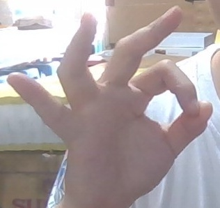
Ok
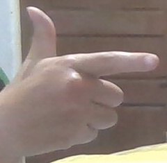
Next
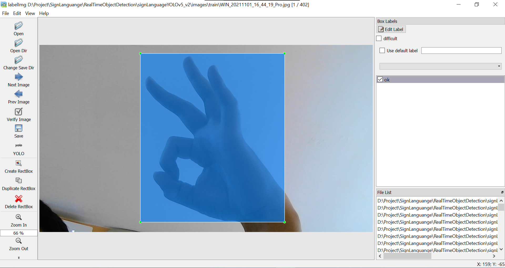
Images were captured from a laptop camera, then labeled with labelImg and saved in YOLO format (x, y, w, h). Bounding boxes were kept as tight as possible around each gesture to minimize background noise in training.
Train & Evaluation Phase
Training ran on Google Colab (GPU) starting from the pre-trained yolov5m weights, for about 4 hours and 25 minutes. Resulting metrics: 92.7% accuracy (IoU 0.5–0.95), 99.90% precision, 100% recall, and a 99% F1 score.
Training Parameters
- Image size — 416 px
- Batch size — 4
- Epochs — 300
- Cache — true
- Optimizer — SGD
Key Hyperparameters
- lr0 — 0.01 · lrf — 0.1
- momentum — 0.937
- weight_decay — 0.0005
- warmup_epochs — 3.0
- box — 0.05 · cls — 0.5
- iou_t — 0.2 · anchor_t — 4.0
- hsv_h/s/v — 0.015 / 0.7 / 0.4
- translate — 0.1 · scale — 0.5
- fliplr — 0.5 · mosaic — 1.0
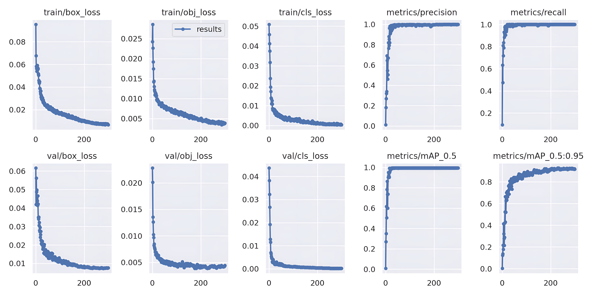
Experiments
Live webcam inference tested each gesture class 30 times at 1-second intervals, taking the dominant detected class each round. Results were scored manually for accuracy, precision, recall, and F1.
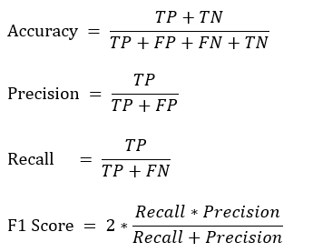
The resulting confusion matrix:
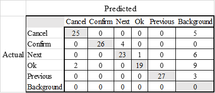
Which produced the following live-inference results:
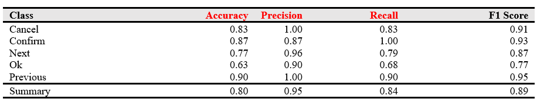
Final live-inference numbers — 80% accuracy, 95% precision, 84% recall, 89% F1 — came in lower than training metrics, likely due to real-world lighting, background, and camera angle variation.
Acknowledgements
This research was conducted with the help of:
- Dr. Indar Sugiarto — supervisor and co-author
- Fakultas Teknologi Industri and LPPM, Petra Christian University — research grant No.09/HBK-PENELITIAN/LPPM-UKP/XI/2022
- Ministry of Education, Culture, Research, and Technology of Indonesia — research grant No. 02/AMD/SP2H/PT-L/LL7/2022
- And others who I couldn't mention individually